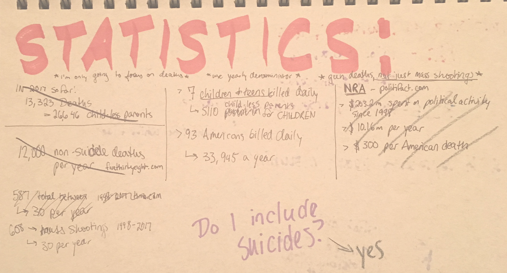
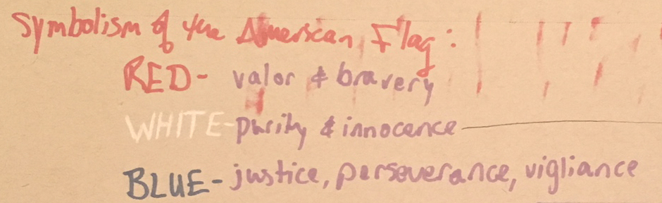
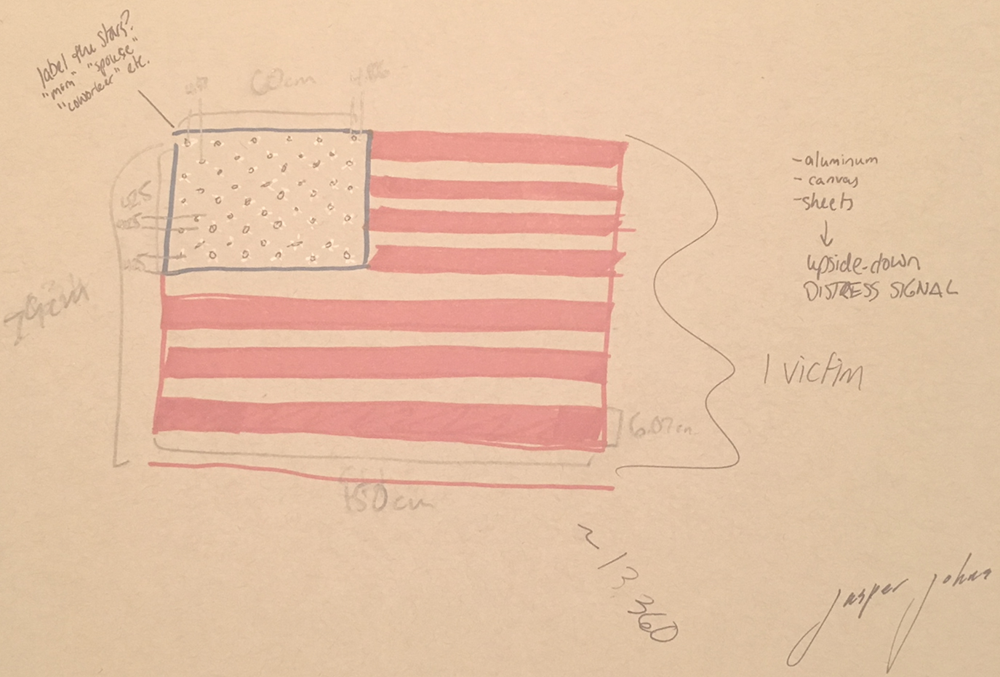

materials: bedsheets


Each year, there are over 33,000 gun-related deaths in the United States.
What story does that tell about our nation?
Everyone knows gun violence is “bad” and “deadly” and “increasing,” but as a designer and artist, I know those nebulous ideas become more unsettling once they have a concrete realization. I wanted to take hard facts and numbers and repackage them in a way that cannot be ignored or glossed over.
The flag represents one victim of gun violence, not specific to mass shootings, homicide, suicide, domestic violence, or accidental death. Each person has a daily social network (i.e. personal interaction, not via the internet) of 50-100 people. Each of the 50 stars represents one person directly and viscerally affected by the death of a gun violence victim. It is hung upside down to mimic distress signals of ships at sea, and to indicate that America, in a sense, is a ship sinking amid great distress.

It is comprised of sheets to reflect another well-known distress signal: sheets can be hung out a window of a home when someone is trapped inside. Additionally, all the bedclothes have been slept on. A terrifying intimacy blossoms from this choice. Beds are a place of vulnerability and relaxation, and this piece represents the violation of human life.


A cornerstone decision of this work was to make a flag of my own, rather than deface a “real” flag. As a fierce patriot and lover of this country, I didn’t think I could bring myself to alter Old Glory, after which I am named. But the choice to create a flag raises a host of unexpected questions. One viewer asked me, “Why don’t you consider your work to be a flag? It certainly looks and acts like one. Is it intrinsically different than the one we fly on the flagpole?”
I was forced to consider that my flag was made with greater time, effort, and even love than a store-bought flag made in China. Although one was made to be flown and one was made to be art, which held more significance? Which was more authentic?
Did I commit the very grievance I was hoping to avoid by creating this flag with such care?
The final work was more that just a story of violence in modern America. It was a story of lines in the sand, of identity, and of striving to be worthy of the dream for which the flag flies.